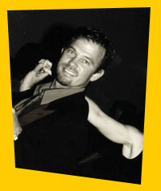

|
 |
Tomaj Trenda (download presskit) received a Masters Degree in Dance Education and has been working as a full-time professional dancer, educator and choreographer ever since. As a dance faculty member at the University of Washington, Cornish College of the Arts, the University of the West Indies, the National Ballet of Mexico and the College of Marin, Tomaj taught thousands of students the joy of dance. He has also performed Internationally throughout Europe, Asia and North America.
He has pursued extensive post-graduate training in the efficient teaching of new motor skills to adults, physical coordination and grace, and in the arts of Salsa, Swing, Tango & Ballroom dancing. He began dancing Salsa in 1994, and trained with Alex de Silva (L.A.) , Joby & Luis Vasquez (L.A.) and Eddie Torres (N.Y.). and has performed at the world's largest Salsa Congress in Los Angles.
His focus for his professional career has been to provide the student with the highest-quality learning experience possible...Excellence in the Art of Teaching dance. He currently trains hundreds of students authentic Club-Style Salsa every week via group classes and private lessons throughout the San Francisco Bay Area. Tomaj is committed to spreading the pleasure, passion and playfulness of Salsa Dancing. He is also an award-winning West Coast Swing dancer.
Tomaj’s teaching method is fun, thorough, and supportive of your learning style. We feature easy to assimilate movement segments and providing just the right amount of repetition for quick inclusion into your long-term memory.
Teaching Method
Our classes are based on the latest research into motor skills learning, movement memory and retention. We've studied how the human brain learns movement and how movement can be taught most quickly. Just the right amount of repetition, done correctly and supported by key concepts is one of the "hidden ways" we supercharge your learning process.
The PROBLEM:The most difficult part of learning to dance - and the one that will slow you down tenfold (and cost you a LOT more money and time) - is FORGETFULNESS. Students learn a new skill or pattern, but then quickly forget what they have learned in class. Within a few days-or even hours-your brain can not recall the sequence. This is because the new material has not yet been "embodied" or committed to your long-term memory. It feels good to learn it in the moment, but try going to the club or practicing at home, and you're lost. Classes taught at Night Clubs, "pick-up" classes or "drop-in" classes are the worst for this kind of forgetfulness. You will typically see a pattern on only one night. The basic moves which went into building that pattern will not be identified or elaborated upon and subsequent classes will not build upon that "Theme".
How We Teach: Our method is progressive and thorough, with each class building upon the foundation laid by previous classes. You learn from the ground up and build your dancing skills along with an understanding of the structure of the dance. Learning something deeply requires an understanding of the building blocks of the form and working with them in a "Theme and Variations" way. All Salsa with Tomaj classes and DVD's follow a progressive series format and are structured to delve deeply into particular "root" moves - based on what the follower is being asked to perform. Leaders learn variations of these "root" moves, to add complexity and style. Followers execute countless variations without getting flustered because they understand the root movement they are being asked to perform and learn to orientate with that in a fast changing environment. We've also developed numerous "retention tools" that will help you remember what you've learned...so you don't lose your investment! The best of these tools is our NEW INSTRUCTIONAL DVDs.
Helping you learn is our number one priority.
Join Us!
DROP-IN ANYTIME!
|
|
 |
|